Ledger Investing industry database
2021 - 2023
Oftentimes it's very difficult to effectively communicate their data analysis capabilities to potential customers. This ongoing project for Ledger Investing tackled this challenge head-on by creating a publicly accessible industry database, serving as both a reference for customers and a showcase of Ledger's data analysis capabilities. Now a part of the "Learn" tab on the Ledger website, the database empowers users with industry data visualizations and research.
back to the top
back to portfolio
01. Problem
Multiple challenges emerged from having scattered data resources across Ledger. This project aimed to address these issues by creating a unified, accessible database that would empower communication and transparency across all stakeholders.
- Sales Frustration: The sales team relied on an outdated "old database" to showcase data analysis capabilities to potential customers. This solution was limited in access and didn't reflect Ledger's current platform and dataset.
- Data Science Bottleneck: Valuable research conducted by the data science team was siloed, lacking a dedicated platform for sharing insights with actuaries on the customer side. This resulted in time-consuming efforts creating custom PDFs and answering basic questions on customer calls.
- Limited Brand Awareness: Without a centralized resource, Ledger appeared as a "black box" to many, hindering customer understanding and trust.
Project origination: pain points
To identify the full potential of the industry database, we conducted a comprehensive analysis of existing resource
pages and knowledge bases. This research extended beyond the insurance industry, examining acclaimed examples from
companies like Redfin and Stripe. We also looked within the car insurance industry, analyzing GetJerry's extensive car
insurance database.
This competitive research revealed several key benefits beyond simply presenting data:
- Industry Authority: A well-designed database could position Ledger as a thought leader within the insurance industry.
- Enhanced Credibility: Providing valuable resources fosters trust and establishes Ledger as a reliable data source.
- User Engagement: A compelling user experience fosters exploration and deeper engagement with Ledger's services.
Initially, I experimented with the concept of a "Ledger Library" to centralize existing materials. This involved
collaborating with some engineers to explore various options, including pre-built documentation software. We also
considered housing additional resources beyond written content, such as company videos and sales presentation slides.
However, after careful evaluation, we determined a custom-built solution would best serve Ledger's needs. This approach
offered several advantages:
- Tailored Functionality: A custom platform could cater to the specific needs of Ledger's data and diverse audience segments. This includes a section for user who are logged in to access locked content.
- Scalability and Flexibility: Building from scratch allowed for future expansion and integration of additional resources beyond the initial focus.
- Seamless User Experience: Custom development facilitated a cohesive user experience that seamlessly integrates with the existing Ledger website.
While pre-built solutions offered convenience, the custom approach ultimately provided a more comprehensive and adaptable platform for Ledger's evolving needs.
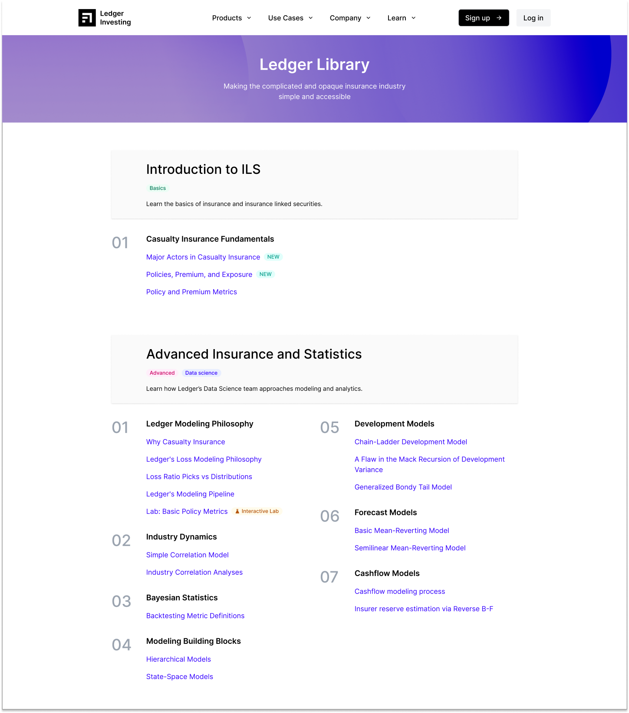To explore the potential of the "Ledger Library" concept, I collaborated with Ben from the data science team. We leveraged some of their existing white papers as a starting point. This collaboration allowed us to develop a prototype showcasing the core functionality of the Library, including:
- Centralized Storage: Organization and easy access to the Data Science team's valuable research papers.
- Interactive Elements: The prototype incorporated interactive "labs" as potential tools for user engagement. These labs would have code snippets that users could run on their own machines based on Jupiter notebooks.
While the Library concept ultimately evolved into 2 separate database, this initial exploration with Ben proved valuable in solidifying the need for a knowledge hub.
02. The old database
The Industry Database project built upon the groundwork established by the founding team's "legacy database." This initial platform, though never officially released, leveraged publicly available data on insurance companies' financial reports. It served as a valuable foundational resource for investors, offering insights into the insurance industry landscape.
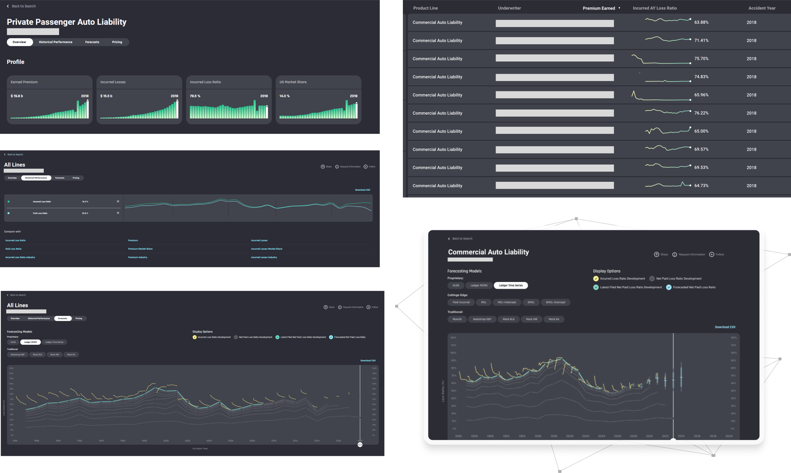While the legacy database wasn't officially launched, its data and charts proved valuable to the sales team. These elements functioned as a powerful pre-release sales tool, allowing them to showcase Ledger's capabilities in data gathering and analysis to potential customers. This unofficial use case highlighted the clear need for a more accessible and comprehensive platform, ultimately leading to the development of the Industry Database.
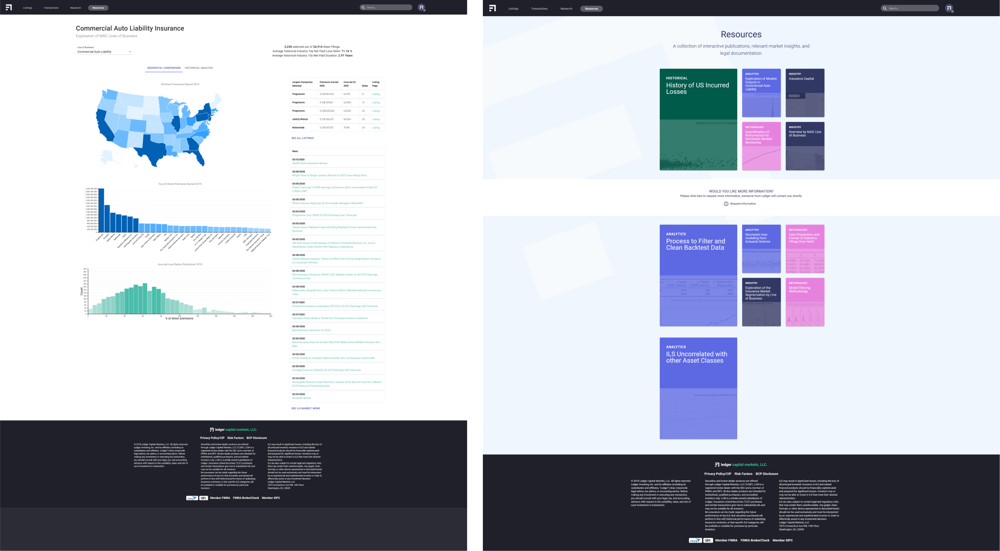The legacy database also housed a significant amount of data science writing by Ledger co-founder Julien. However, this valuable resource remained largely unseen due to the platform's limited accessibility. This untapped potential for sharing insights with a wider audience became a key driver for the development of the Industry Database project.
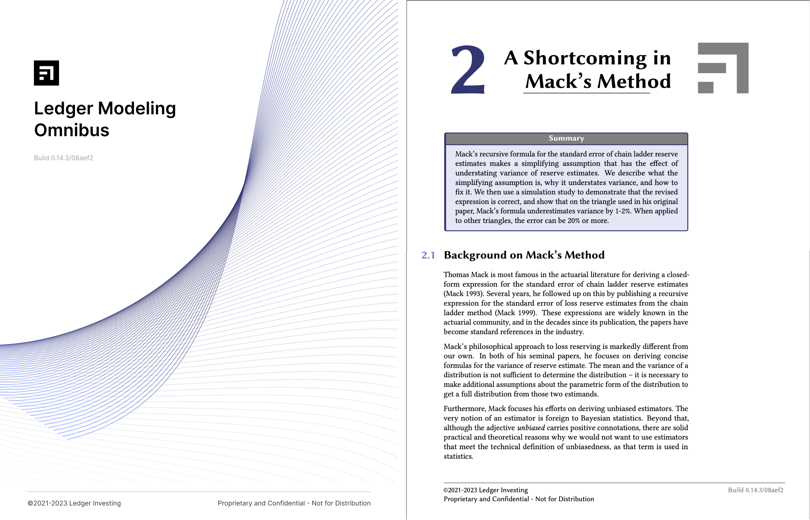
While the legacy database offered a glimpse into Ledger's data analysis capabilities, it wasn't designed for ongoing
knowledge sharing. Recognizing this limitation, the Data Science team independently created their own online resource –
a wiki – to compile their research and writing.
Note: While this resource shared some characteristics with a wiki, it is not a wiki as it does not offer collaborative editing features.
I also helped Mark create the above design for the print version of the data science publications.
03. Design
The project's core objective was to unify scattered data and resources into a user-friendly platform accessible on the Ledger website. This centralized hub aimed to achieve three key results that we would measure success against:
- Enhanced Accessibility: Replicate the charts and data from the old database, making it readily available for both customers and non-customers.
- Knowledge Sharing: Establish a dedicated space for academic content like data science papers, fostering knowledge sharing and transparency.
- Thought Leadership: Leverage the database as a public resource, positioning Ledger as a valuable industry resource and thought leader.
With a multitude of potential starting points, I collaborated closely with Michael, the project manager, to establish a
strategic direction. While data science writing held value, we ultimately decided to prioritize the industry data
section. This decision was driven by the data and charts' powerful ability to deliver immediate impact and align with all goals.
This focus on data ensured the project hit the ground running, meeting all three initial objectives. Following this
success, we planned to continue development on the data science writing section, creating a comprehensive knowledge
library in the future.
The Industry Database homepage makes a strong first impression with two key elements:
- Compelling Data Visualization: A prominent "big total industry chart" alongside breakdowns by Lines of Business (LOBs) offers users a quick snapshot of the industry landscape.
- Intelligent Search: Leveraging Algolia, the search bar facilitates intuitive exploration. We anticipated users would often have specific insurers in mind, so this powerful search serves as a primary navigation tool alongside the LOB breakdowns.
These features cater to different user preferences, allowing some to browse by category and others to jump right into specific data points they're interested in.
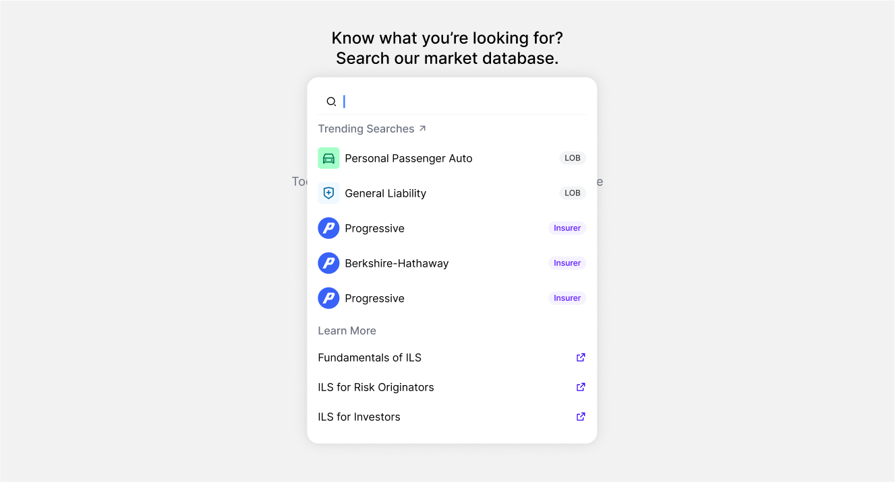The Industry Database prioritizes user experience with a powerful search bar powered by Algolia. This goes beyond simple keyword matching to offer several key functionalities:
- Fuzzy Search: Handles typos and misspellings, ensuring users find the information they need regardless of minor mistakes.
- Related Searches: Recommends relevant content based on the user's query, guiding them towards deeper exploration of the data.
- Cross-Referencing (Future): In future development, the search could seamlessly connect users to related articles and writing within the database, fostering a more comprehensive learning experience.
By incorporating these features, the search bar empowers users to navigate the database efficiently and discover valuable insights.
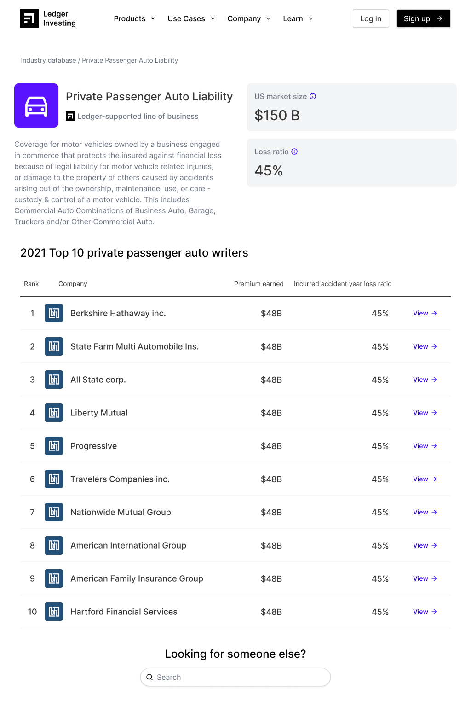The Industry Database caters to a broad audience by providing targeted data on each Line of Business (LOB). These dedicated pages offer:
- Industry Snapshot: Users are greeted with a concise overview of the specific LOB, providing a quick grasp of the sector's current landscape.
- Benchmarking Tools: Potential customers (primarily insurers) can leverage Top 10 insurer lists to compare their performance against industry rivals.
- Growth Potential: For investors, the LOB pages highlight key metrics that signal an insurer's potential for growth or their established market strength. This gives investors a small glimps into the amount of data that Ledger was working with.
By tailoring data presentations to specific needs within each Line of Business, the Industry Database transcends a simple data repository. It empowers key stakeholders across industries to see what Ledger can do with industry data.
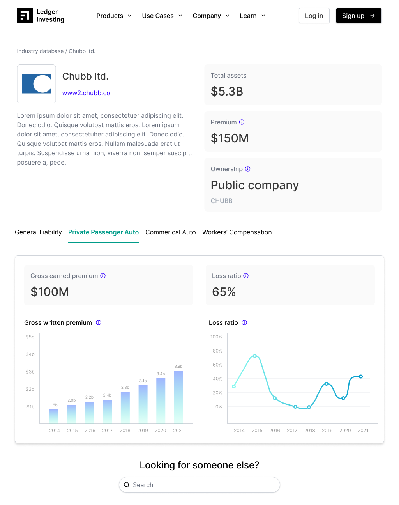For users seeking a granular view, the Industry Database offers dedicated Insurer detail pages. These pages function as data hubs, allowing users to delve deeper into a specific company's performance across all Lines of Business (LOBs) they operate in. This comprehensive overview empowers users to analyze trends, identify strengths and weaknesses, and gain a well-rounded understanding of an insurer's position within the market.
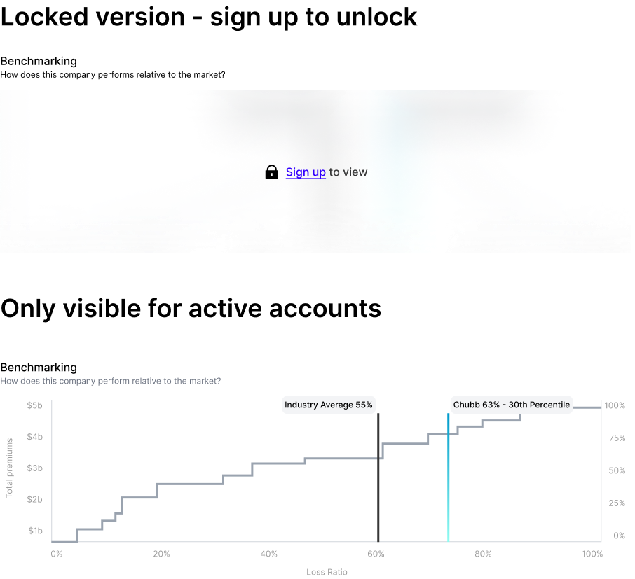To explore user engagement strategies, we incorporated design mockups featuring "gated content." This meant strategically reserving some of the more in-depth charts and resources behind a user sign-up. This approach aimed to incentivize deeper user commitment with Ledger while still offering valuable insights on the public-facing side of the database.
Beyond core functionalities, we explored future sections like media and presentations. This stemmed from sales team needs to share event materials. Envisioned for a future release, this section would allow attendees to access recordings and slides, fostering continued engagement.
04. Hackathon
With a multitude of potential projects on the table, fostering a shared focus was crucial. Through a collaborative voting process, the team identified the Industry Database as the most impactful initiative. This unified vision fueled our excitement, leading to a dedicated in-person "hackathon" in California. This intensive session brought together product, engineering, and data teams for a focused effort on developing the fastest possible MVP (Minimum Viable Product) based on the Industry Database project.
Hackathon goal:
Iterate, build, and launch. 3 day time limit. We launch on the last day no matter what!!

With a clear vision, our cross-functional team embarked on an ambitious three-day "hackathon" in California. During this intensive session, we tackled several critical tasks:
- Design Refinement: We streamlined the design for the Industry Database MVP, ensuring a user-friendly experience. Messaging Optimization: We honed the messaging to effectively communicate the database's value proposition to different user groups.
- Data Integration: We successfully connected the old database data stores, ensuring a seamless flow of information into the new platform.
- Front-End Development: Working collaboratively, the team built and published all the front-end components, laying the foundation for the MVP launch.
This intense yet rewarding experience underscored the power of in-person collaboration and our team's ability to deliver under pressure.
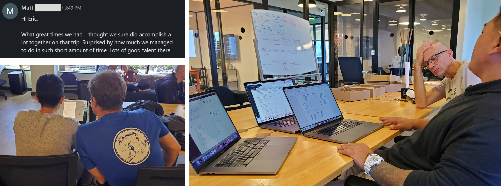05. Post-Hackathon
Our post-hackathon focus was refining the Industry Database MVP. We prioritized enhancing charts for clarity and worked towards complete data parity with the old database, ensuring users have access to all historical information. This commitment to continuous improvement keeps the Industry Database delivering valuable user insights.
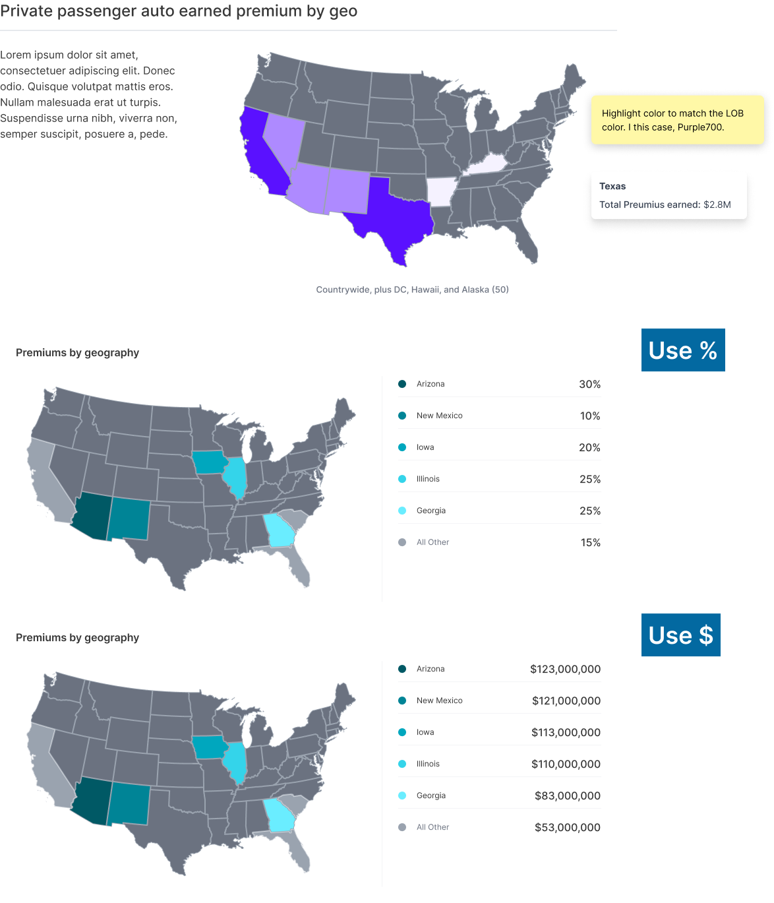The old database excelled in presenting data geographically. Recognizing this user preference, we explored advanced techniques for translating a wider range of data series into compelling geo-visualizations. This involved experimenting with mapping various metrics, aiming to provide users with even richer insights into industry trends across different geographic locations.
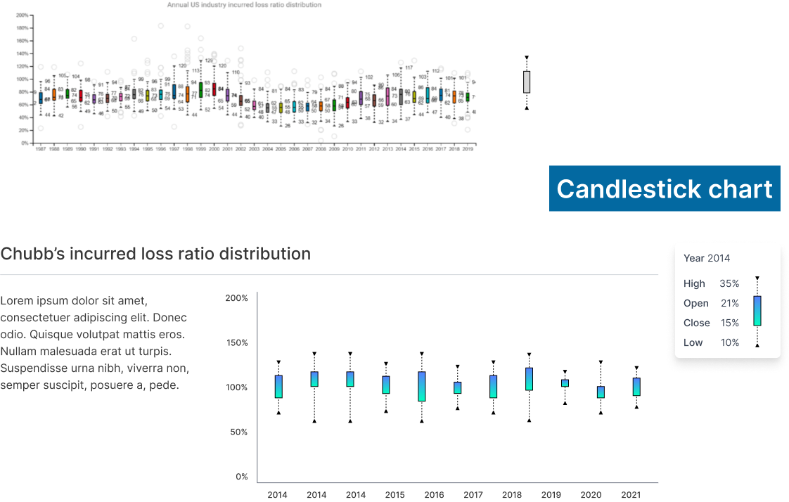To cater to our investor user base, we explored incorporating candlestick charts on the Insurer detail page. These charts, a familiar format for financial data analysis, would have enabled investors to visualize historical stock price movements and make more informed investment decisions.
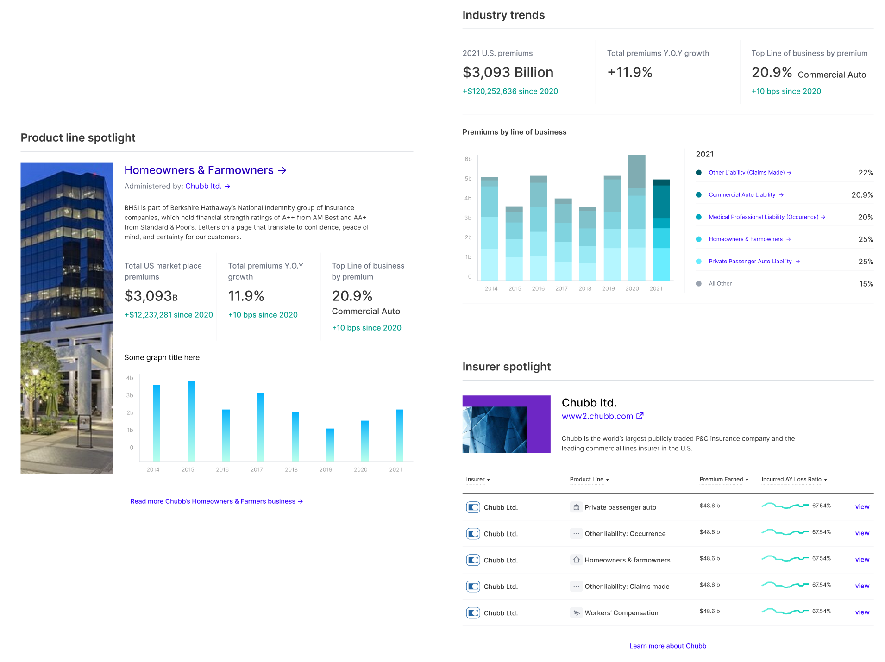While the initial launch of the Industry Database focused on core functionalities, a wealth of exciting ideas remain on the horizon. These include:
- Company Spotlights: Dedicated sections showcasing specific insurers or Lines of Business would provide users with in-depth explorations of industry leaders or emerging trends within a particular sector.
- Industry Trend Visualization: Interactive charts and graphs could be implemented to dynamically illustrate historical and projected changes across the entire industry and individual LOBs.
These enhancements would further empower users to delve deeper into the data, fostering a richer understanding of the insurance landscape.
A Journey of Learning and Collaboration
Looking back, this project has been an incredible learning experience. It began with a simple idea and a handful of enthusiastic engineers who shared my vision. Throughout the process, I gained valuable insights into:
- The power of user-centered design: Understanding user needs and behaviors helped craft an intuitive and engaging platform.
- The importance of collaboration: Working closely with product, engineering, and data teams ensured a successful outcome.
- The value of rapid prototyping: The hackathon experience exemplified the power of focused teamwork in delivering a functional MVP.
Witnessing the Industry Database transform from concept to reality has been a testament to the team's unwavering dedication and collaborative spirit. It empowers users with valuable data, solidifying Ledger as a thought leader within the insurance industry. As we build upon this foundation, the Industry Database is poised to become a cornerstone resource for navigating the complexities of the insurance landscape.